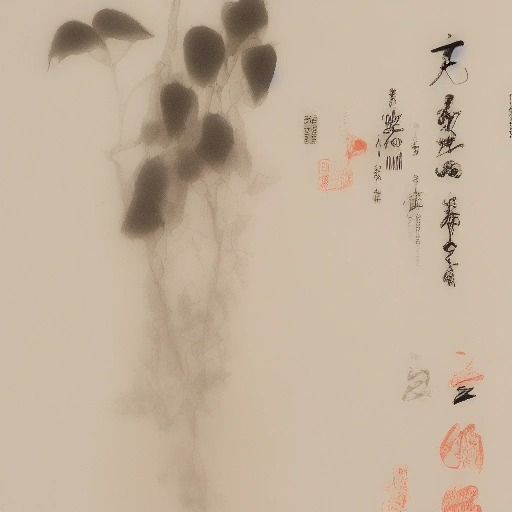
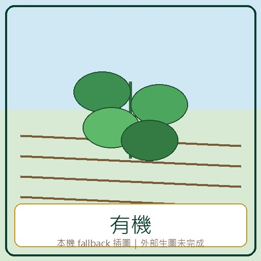
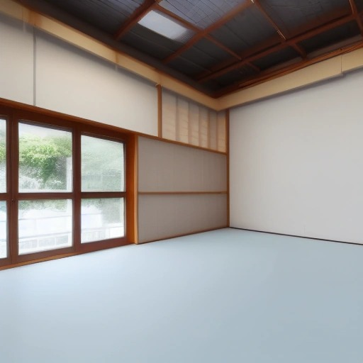
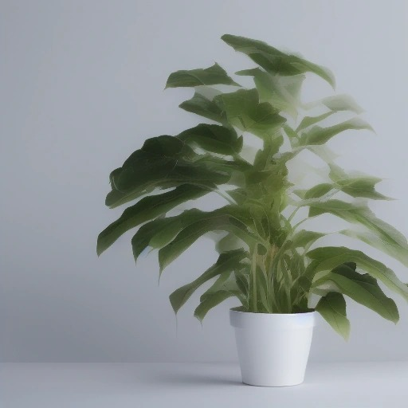

<!DOCTYPE html>
<html lang="zh-Hant">
<head>
  <meta charset="UTF-8">
  <meta name="viewport" content="width=device-width, initial-scale=1.0">
  <title>情境會話：介紹 有機蔬菜 - 臺語互動教材</title>
  <link href="https://fonts.googleapis.com/css2?family=Noto+Sans+TC:wght@400;700;900&family=Outfit:wght@400;600;800&display=swap" rel="stylesheet">
  <style>
    :root {
      --primary: #0b3c30;
      --primary-light: #edf6f2;
      --accent: #c69214;
      --bg: #fdfbf7;
      --text: #2f3e46;
      --card-bg: #ffffff;
      --correct: #2e7d32;
      --correct-bg: #e8f5e9;
      --wrong: #c62828;
      --wrong-bg: #ffebee;
      --border: #d9e2dc;
    }

    * {
      box-sizing: border-box;
      font-family: 'Noto Sans TC', sans-serif;
    }

    body {
      margin: 0;
      background-color: var(--bg);
      color: var(--text);
      line-height: 1.6;
      padding: 0 0 100px 0;
    }

    .hero-banner {
      background: linear-gradient(135deg, var(--primary) 0%, #155e4b 100%);
      color: white;
      padding: 50px 20px;
      text-align: center;
      box-shadow: 0 4px 20px rgba(11, 60, 48, 0.15);
    }

    .hero-banner h1 {
      margin: 0;
      font-size: 2.5rem;
      font-weight: 900;
      letter-spacing: -0.02em;
    }

    .hero-meta {
      margin-top: 15px;
      font-size: 1.1rem;
      color: #a3c4bc;
    }

    .tag {
      display: inline-block;
      background-color: rgba(255,255,255,0.15);
      padding: 4px 12px;
      border-radius: 20px;
      font-size: 0.9rem;
      margin: 5px;
    }

    .main-content {
      max-width: 900px;
      margin: 40px auto;
      padding: 0 20px;
    }

    h2 {
      color: var(--primary);
      font-size: 1.8rem;
      border-left: 5px solid var(--accent);
      padding-left: 15px;
      margin-top: 40px;
      margin-bottom: 20px;
    }

    /* 課綱對照 CSS */
    .curriculum-box {
      background-color: white;
      border: 1px solid var(--border);
      border-radius: 12px;
      padding: 20px;
      margin-bottom: 30px;
    }
    .curriculum-list {
      list-style-type: none;
      padding: 0;
      margin: 0;
    }
    .curriculum-list li {
      padding: 8px 0;
      border-bottom: 1px dashed var(--border);
    }
    .curriculum-list li:last-child { border: none; }

    .official-resource-list {
      display: grid;
      gap: 14px;
    }
    .official-resource-card {
      background: white;
      border: 1px solid var(--border);
      border-left: 5px solid var(--accent);
      border-radius: 10px;
      padding: 14px 16px;
    }
    .official-resource-title {
      color: var(--primary);
      font-weight: 800;
      margin-bottom: 6px;
    }
    .official-resource-meta {
      color: #60746d;
      font-size: 0.92rem;
      margin-bottom: 8px;
    }
    .official-resource-card a {
      color: var(--primary);
      font-weight: 700;
      text-decoration: none;
    }

    /* 3D 翻轉單字卡 CSS */
    .vocab-grid {
      display: grid;
      grid-template-columns: repeat(auto-fill, minmax(200px, 1fr));
      gap: 20px;
    }

    .card-container {
      perspective: 1000px;
      height: 250px;
      cursor: pointer;
    }

    .card-inner {
      position: relative;
      width: 100%;
      height: 100%;
      text-align: center;
      transition: transform 0.6s cubic-bezier(0.4, 0.0, 0.2, 1);
      transform-style: preserve-3d;
    }

    .card-front, .card-back {
      position: absolute;
      width: 100%;
      height: 100%;
      backface-visibility: hidden;
      border-radius: 16px;
      box-shadow: 0 8px 16px rgba(0,0,0,0.04);
      border: 1px solid var(--border);
      display: flex;
      flex-direction: column;
      justify-content: space-between;
      padding: 20px;
    }

    .card-front {
      background-color: var(--card-bg);
      border-top: 6px solid var(--primary);
    }

    .card-back {
      background-color: var(--primary-light);
      border-top: 6px solid var(--accent);
      transform: rotateY(180deg);
      justify-content: center;
    }

    .vocab-img-container {
      width: 140px;
      height: 140px;
      margin: 10px auto;
      border-radius: 12px;
      overflow: hidden;
      border: 2px solid var(--accent);
      box-shadow: 0 4px 8px rgba(0,0,0,0.05);
    }
    .vocab-card-img {
      width: 100%;
      height: 100%;
      object-fit: cover;
    }

    .card-header {
      display: flex;
      justify-content: space-between;
      align-items: center;
    }

    .badge {
      background-color: var(--primary-light);
      color: var(--primary);
      font-size: 0.8rem;
      font-weight: bold;
      padding: 3px 8px;
      border-radius: 12px;
    }

    .speaker-btn {
      background: none;
      border: none;
      font-size: 1.2rem;
      cursor: pointer;
      padding: 0;
      transition: transform 0.2s;
    }

    .speaker-btn:hover {
      transform: scale(1.2);
    }

    .hanji-display {
      font-size: 2.2rem;
      font-weight: bold;
      color: var(--primary);
      margin: 15px 0;
    }

    .tailo-display {
      font-size: 1.05rem;
      color: var(--accent);
      font-weight: 600;
    }

    .hint-text, .back-hint {
      font-size: 0.75rem;
      color: #999;
    }

    .back-title {
      font-size: 0.85rem;
      color: var(--primary);
      text-transform: uppercase;
      letter-spacing: 0.1em;
    }

    .translation-display {
      font-size: 1.8rem;
      font-weight: bold;
      color: var(--primary);
      margin: 20px 0;
    }

    /* 對話聊天 CSS */
    .dialogue-container {
      display: flex;
      flex-direction: column;
      gap: 20px;
      background-color: white;
      border: 1px solid var(--border);
      border-radius: 16px;
      padding: 25px;
    }

    .dialogue-row {
      display: flex;
      gap: 15px;
      align-items: flex-start;
    }

    .speaker-avatar {
      width: 44px;
      height: 44px;
      border-radius: 50%;
      background-color: var(--accent);
      color: white;
      display: grid;
      place-items: center;
      font-weight: bold;
      font-size: 1.2rem;
      box-shadow: 0 4px 8px rgba(198,146,20,0.2);
    }

    .dialogue-bubble {
      background-color: var(--primary-light);
      border: 1px solid var(--border);
      border-radius: 4px 16px 16px 16px;
      padding: 15px 20px;
      max-width: 80%;
      cursor: pointer;
      position: relative;
      transition: all 0.3s;
    }

    .dialogue-bubble:hover {
      transform: translateY(-2px);
      box-shadow: 0 6px 12px rgba(0,0,0,0.04);
    }

    .speaker-name {
      font-size: 0.85rem;
      color: var(--accent);
      font-weight: bold;
      margin-bottom: 5px;
    }

    .dialogue-sentence {
      font-size: 1.2rem;
      font-weight: bold;
      color: var(--primary);
    }

    .dialogue-tailo {
      font-size: 0.95rem;
      color: var(--text);
      font-style: italic;
      margin-top: 5px;
    }

    .dialogue-zh {
      font-size: 0.95rem;
      color: var(--correct);
      font-weight: bold;
      margin-top: 8px;
      padding-top: 8px;
      border-top: 1px dashed var(--border);
      display: none; /* 預設隱藏 */
    }

    .dialogue-hint {
      font-size: 0.7rem;
      color: #999;
      text-align: right;
      margin-top: 8px;
    }

    /* 互動評量測驗 CSS */
    .quiz-container {
      display: flex;
      flex-direction: column;
      gap: 25px;
    }

    .quiz-card {
      background-color: white;
      border: 1px solid var(--border);
      border-radius: 16px;
      padding: 25px;
      box-shadow: 0 8px 16px rgba(0,0,0,0.03);
    }

    .quiz-question {
      font-size: 1.2rem;
      font-weight: bold;
      color: var(--primary);
      margin-bottom: 18px;
    }

    .options-container {
      display: flex;
      flex-direction: column;
      gap: 10px;
    }

    .option-btn {
      background-color: white;
      border: 1px solid var(--border);
      border-radius: 8px;
      padding: 12px 18px;
      text-align: left;
      font-size: 1rem;
      cursor: pointer;
      transition: all 0.2s;
    }

    .option-btn:hover {
      background-color: var(--primary-light);
      border-color: var(--primary);
    }

    .option-btn.correct {
      background-color: var(--correct-bg) !important;
      border-color: var(--correct) !important;
      color: var(--correct) !important;
      font-weight: bold;
    }

    .option-btn.wrong {
      background-color: var(--wrong-bg) !important;
      border-color: var(--wrong) !important;
      color: var(--wrong) !important;
    }

    .quiz-feedback {
      margin-top: 15px;
      font-weight: bold;
      font-size: 1.05rem;
      display: none;
    }

    .quiz-explanation {
      margin-top: 8px;
      padding: 12px;
      background-color: #f7f9f7;
      border-radius: 8px;
      color: #666;
      font-size: 0.9rem;
      display: none;
    }

    /* 課堂浮動小工具控制台 CSS */
    .widget-toggle-btn {
      position: fixed;
      bottom: 25px;
      right: 25px;
      width: 56px;
      height: 56px;
      border-radius: 50%;
      background-color: var(--primary);
      color: white;
      border: none;
      font-size: 1.5rem;
      cursor: pointer;
      box-shadow: 0 4px 16px rgba(11,60,48,0.3);
      z-index: 1001;
      transition: transform 0.3s;
    }

    .widget-toggle-btn:hover {
      transform: scale(1.1);
    }

    .widget-panel {
      position: fixed;
      bottom: 95px;
      right: 25px;
      width: 320px;
      background: rgba(255, 255, 255, 0.9);
      backdrop-filter: blur(10px);
      -webkit-backdrop-filter: blur(10px);
      border: 1px solid rgba(255,255,255,0.3);
      border-radius: 18px;
      box-shadow: 0 10px 30px rgba(0,0,0,0.1);
      padding: 20px;
      z-index: 1000;
      display: none; /* 預設隱藏 */
    }

    .widget-header {
      font-weight: bold;
      color: var(--primary);
      border-bottom: 1px solid var(--border);
      padding-bottom: 8px;
      margin-bottom: 15px;
      display: flex;
      justify-content: space-between;
    }

    .tool-section {
      margin-bottom: 20px;
    }
    .tool-section:last-child { margin-bottom: 0; }

    .tool-title {
      font-size: 0.9rem;
      color: var(--accent);
      font-weight: bold;
      margin-bottom: 8px;
    }

    /* 計時器樣式 */
    .timer-display {
      font-size: 1.8rem;
      font-weight: 800;
      text-align: center;
      margin: 10px 0;
      color: var(--primary);
    }
    .timer-controls {
      display: flex;
      gap: 8px;
    }
    .timer-btn, .random-btn {
      flex: 1;
      background-color: var(--primary);
      color: white;
      border: none;
      padding: 8px;
      border-radius: 6px;
      cursor: pointer;
      font-size: 0.85rem;
      font-weight: bold;
    }
    .timer-btn.stop { background-color: var(--wrong); }

    /* 抽籤器樣式 */
    .random-display {
      font-size: 2.2rem;
      font-weight: 900;
      text-align: center;
      color: var(--accent);
      margin: 8px 0;
    }

    /* 對話泡泡音訊播放按鈕樣式 */
    .bubble-audio-btns {
      margin-left: 15px;
      display: inline-flex;
      gap: 5px;
      vertical-align: middle;
    }

    .bubble-audio-btn {
      background-color: var(--primary);
      color: white;
      border: 1px solid rgba(255,255,255,0.2);
      border-radius: 12px;
      padding: 2px 8px;
      font-size: 0.75rem;
      font-weight: bold;
      cursor: pointer;
      transition: background-color 0.2s;
    }

    .bubble-audio-btn:hover {
      background-color: var(--accent);
    }

    .bubble-audio-btn.slow {
      background-color: var(--accent);
    }

    .bubble-audio-btn.slow:hover {
      background-color: var(--accent);
    }

    /* 口語練習與發音評估樣式 */
    .speaking-section {
      margin-top: 15px;
      padding: 10px;
      background-color: rgba(255,255,255,0.6);
      border-radius: 10px;
      border: 1px dashed var(--border);
      text-align: center;
    }

    .speaking-section.bubble-speak {
      margin-top: 10px;
      background-color: rgba(255,255,255,0.4);
      border: 1px dashed var(--border);
      text-align: left;
      display: none; /* 預設隱藏，有錄音才顯示 */
    }

    .mic-btn, .bubble-audio-btn.mic {
      background-color: #2a6f97;
      color: white;
      border: none;
      border-radius: 8px;
      padding: 6px 12px;
      font-size: 0.85rem;
      font-weight: bold;
      cursor: pointer;
      display: inline-flex;
      align-items: center;
      gap: 5px;
      transition: background-color 0.2s;
    }

    .bubble-audio-btn.mic {
      background-color: #2a6f97;
      padding: 2px 8px;
      font-size: 0.75rem;
      border-radius: 12px;
    }

    .mic-btn:hover, .bubble-audio-btn.mic:hover {
      background-color: #014f86;
    }

    .mic-btn.recording, .bubble-audio-btn.mic.recording {
      background-color: var(--wrong) !important;
      animation: mic-pulse 1.2s infinite;
    }

    @keyframes mic-pulse {
      0% { transform: scale(1); }
      50% { transform: scale(1.05); }
      100% { transform: scale(1); }
    }

    .speaking-status {
      font-size: 0.8rem;
      color: var(--text);
      margin: 8px 0;
      display: flex;
      justify-content: center;
      align-items: center;
      gap: 5px;
    }

    .pulse-dot {
      animation: pulse-red 1s infinite;
    }

    @keyframes pulse-red {
      0% { opacity: 0.3; }
      50% { opacity: 1; }
      100% { opacity: 0.3; }
    }

    .speak-controls {
      display: flex;
      gap: 8px;
      justify-content: center;
      margin-top: 5px;
    }

    .speak-play-btn, .speak-eval-btn {
      background-color: white;
      border: 1px solid var(--border);
      color: var(--text);
      border-radius: 6px;
      padding: 4px 10px;
      font-size: 0.75rem;
      cursor: pointer;
      font-weight: bold;
      transition: all 0.2s;
    }

    .speak-play-btn:hover {
      background-color: var(--primary-light);
      border-color: var(--primary);
      color: var(--primary);
    }

    .speak-eval-btn {
      background-color: var(--primary);
      color: white;
      border: none;
    }

    .speak-eval-btn:hover {
      background-color: var(--accent);
    }

    .eval-card {
      margin-top: 10px;
      padding: 10px;
      background-color: white;
      border-radius: 8px;
      border: 1px solid var(--border);
      text-align: left;
      font-size: 0.8rem;
      box-shadow: 0 4px 8px rgba(0,0,0,0.02);
    }

    .eval-score-row {
      display: flex;
      justify-content: space-between;
      align-items: center;
      margin-bottom: 8px;
      padding-bottom: 6px;
      border-bottom: 1px solid var(--primary-light);
    }

    .eval-score {
      font-weight: 900;
      font-size: 1.1rem;
      padding: 2px 8px;
      border-radius: 4px;
    }

    .score-excellent {
      background-color: var(--correct-bg);
      color: var(--correct);
    }

    .score-good {
      background-color: #fff3cd;
      color: #856404;
    }

    .score-retry {
      background-color: var(--wrong-bg);
      color: var(--wrong);
    }

    .eval-feedback {
      font-weight: bold;
      color: var(--primary);
    }

    .eval-details {
      color: #666;
      line-height: 1.4;
    }

    .offline-warning {
      margin-top: 8px;
      font-size: 0.7rem;
      color: #856404;
      background-color: #fff3cd;
      padding: 4px 8px;
      border-radius: 4px;
      border: 1px solid #ffeeba;
    }
  </style>
</head>
<body>

  <!-- Top Hero Banner -->
  <div class="hero-banner">
    <h1>📐 情境會話：介紹 有機蔬菜</h1>
    <div class="hero-meta">
      <span class="tag">🏫 國小三年級</span>
      <span class="tag">⏱️ 課程長度：45 分鐘</span>
      <span class="tag">🗣️ 語言系統：教育部臺灣台語羅馬字</span>
    </div>
  </div>

  <div class="main-content">

    <!-- 課綱學習目標 -->
    <h2>一、學習指標與課綱對應</h2>
    <div class="curriculum-box">
      <ul class="curriculum-list">
      </ul>
    </div>

    <!-- 3D 翻轉詞彙卡 -->
    <h2>二、核心詞彙認讀與翻牌練習 (Flashcards)</h2>
    <div class="vocab-grid">
            <div class="card-container" onclick="flipCard(0)">
              <div class="card-inner" id="card-0">
                <!-- 正面 -->
                <div class="card-front">
                  <div class="card-header">
                    <span class="badge">詞彙 1</span>
                    <button class="speaker-btn" onclick="speakText(event, '菜蔬', 'audio/vocab_菜蔬.ogg')">🔊</button>
                  </div>
<div class="vocab-img-container"></div>                  <div class="hanji-display">菜蔬</div>
                  <div class="tailo-display">Tshài-se</div>
                  <div class="hint-text">點擊翻面看翻譯</div>
                </div>
                <!-- 反面 -->
                <div class="card-back" onclick="event.stopPropagation()">
                  <div class="back-title">華語翻譯</div>
                  <div class="translation-display">蔬菜</div>
                  <div class="speaking-section">
                    <button class="mic-btn" id="mic-vocab-0" onclick="toggleRecording(event, 'vocab', 0, '菜蔬')">🎤 錄音練習</button>
                    <div class="speaking-status" id="status-vocab-0"></div>
                    <div class="evaluation-result" id="result-vocab-0"></div>
                  </div>
                  <div class="back-hint" onclick="flipCard(0)">點擊翻回正面</div>
                </div>
              </div>
            </div>
            <div class="card-container" onclick="flipCard(1)">
              <div class="card-inner" id="card-1">
                <!-- 正面 -->
                <div class="card-front">
                  <div class="card-header">
                    <span class="badge">詞彙 2</span>
                    <button class="speaker-btn" onclick="speakText(event, '有機', 'audio/vocab_有機.ogg')">🔊</button>
                  </div>
<div class="vocab-img-container"></div>                  <div class="hanji-display">有機</div>
                  <div class="tailo-display">Iú-ki</div>
                  <div class="hint-text">點擊翻面看翻譯</div>
                </div>
                <!-- 反面 -->
                <div class="card-back" onclick="event.stopPropagation()">
                  <div class="back-title">華語翻譯</div>
                  <div class="translation-display">有機</div>
                  <div class="speaking-section">
                    <button class="mic-btn" id="mic-vocab-1" onclick="toggleRecording(event, 'vocab', 1, '有機')">🎤 錄音練習</button>
                    <div class="speaking-status" id="status-vocab-1"></div>
                    <div class="evaluation-result" id="result-vocab-1"></div>
                  </div>
                  <div class="back-hint" onclick="flipCard(1)">點擊翻回正面</div>
                </div>
              </div>
            </div>
            <div class="card-container" onclick="flipCard(2)">
              <div class="card-inner" id="card-2">
                <!-- 正面 -->
                <div class="card-front">
                  <div class="card-header">
                    <span class="badge">詞彙 3</span>
                    <button class="speaker-btn" onclick="speakText(event, '田園', 'audio/vocab_田園.ogg')">🔊</button>
                  </div>
<div class="vocab-img-container"></div>                  <div class="hanji-display">田園</div>
                  <div class="tailo-display">tshân-hn̂g</div>
                  <div class="hint-text">點擊翻面看翻譯</div>
                </div>
                <!-- 反面 -->
                <div class="card-back" onclick="event.stopPropagation()">
                  <div class="back-title">華語翻譯</div>
                  <div class="translation-display">田園</div>
                  <div class="speaking-section">
                    <button class="mic-btn" id="mic-vocab-2" onclick="toggleRecording(event, 'vocab', 2, '田園')">🎤 錄音練習</button>
                    <div class="speaking-status" id="status-vocab-2"></div>
                    <div class="evaluation-result" id="result-vocab-2"></div>
                  </div>
                  <div class="back-hint" onclick="flipCard(2)">點擊翻回正面</div>
                </div>
              </div>
            </div>
            <div class="card-container" onclick="flipCard(3)">
              <div class="card-inner" id="card-3">
                <!-- 正面 -->
                <div class="card-front">
                  <div class="card-header">
                    <span class="badge">詞彙 4</span>
                    <button class="speaker-btn" onclick="speakText(event, '種作', 'audio/vocab_種作.ogg')">🔊</button>
                  </div>
<div class="vocab-img-container"></div>                  <div class="hanji-display">種作</div>
                  <div class="tailo-display">Tsìng-tsoh</div>
                  <div class="hint-text">點擊翻面看翻譯</div>
                </div>
                <!-- 反面 -->
                <div class="card-back" onclick="event.stopPropagation()">
                  <div class="back-title">華語翻譯</div>
                  <div class="translation-display">種植耕作</div>
                  <div class="speaking-section">
                    <button class="mic-btn" id="mic-vocab-3" onclick="toggleRecording(event, 'vocab', 3, '種作')">🎤 錄音練習</button>
                    <div class="speaking-status" id="status-vocab-3"></div>
                    <div class="evaluation-result" id="result-vocab-3"></div>
                  </div>
                  <div class="back-hint" onclick="flipCard(3)">點擊翻回正面</div>
                </div>
              </div>
            </div>
    </div>

    <!-- 情境生活對話 -->
    <h2>三、情境會話 (對話泡泡互動)</h2>
    <div class="dialogue-container">
            <div class="dialogue-row">
              <div class="speaker-avatar">老</div>
              <div class="dialogue-bubble" onclick="toggleTranslation(0)">
                <div class="speaker-name">老師</div>
                <div class="dialogue-sentence">
                  今仔日咱欲認捌有機菜蔬。
                  <span class="bubble-audio-btns" onclick="event.stopPropagation()">
                    <button class="bubble-audio-btn" onclick="playDialogue(event, 'audio/dialogue_0.wav', 1.0)">▶️ 正常</button>
                    <button class="bubble-audio-btn slow" onclick="playDialogue(event, 'audio/dialogue_0.wav', 0.75)">🐌 慢速</button>
                    <button class="bubble-audio-btn mic" id="mic-dialogue-0" onclick="toggleRecording(event, 'dialogue', 0, '今仔日咱欲認捌有機菜蔬。')">🎤 練習</button>
                  </span>
                </div>
                <div class="dialogue-tailo">kin-á-ji̍t lán beh jīn-bat iú-ki tshài-se.</div>
                <div class="dialogue-zh" id="diag-zh-0">今天我們要認識有機蔬菜。</div>
                <div class="speaking-section bubble-speak" id="section-dialogue-0" onclick="event.stopPropagation()">
                  <div class="speaking-status" id="status-dialogue-0"></div>
                  <div class="evaluation-result" id="result-dialogue-0"></div>
                </div>
                <div class="dialogue-hint">點擊切換中文翻譯</div>
              </div>
            </div>
            <div class="dialogue-row">
              <div class="speaker-avatar">學</div>
              <div class="dialogue-bubble" onclick="toggleTranslation(1)">
                <div class="speaker-name">學生</div>
                <div class="dialogue-sentence">
                  有機菜蔬是按怎種作的？
                  <span class="bubble-audio-btns" onclick="event.stopPropagation()">
                    <button class="bubble-audio-btn" onclick="playDialogue(event, 'audio/dialogue_1.wav', 1.0)">▶️ 正常</button>
                    <button class="bubble-audio-btn slow" onclick="playDialogue(event, 'audio/dialogue_1.wav', 0.75)">🐌 慢速</button>
                    <button class="bubble-audio-btn mic" id="mic-dialogue-1" onclick="toggleRecording(event, 'dialogue', 1, '有機菜蔬是按怎種作的？')">🎤 練習</button>
                  </span>
                </div>
                <div class="dialogue-tailo">Iú-ki tshài-se sī-án-tsuánn tsìng-tsoh ê?</div>
                <div class="dialogue-zh" id="diag-zh-1">有機蔬菜是怎麼種植的？</div>
                <div class="speaking-section bubble-speak" id="section-dialogue-1" onclick="event.stopPropagation()">
                  <div class="speaking-status" id="status-dialogue-1"></div>
                  <div class="evaluation-result" id="result-dialogue-1"></div>
                </div>
                <div class="dialogue-hint">點擊切換中文翻譯</div>
              </div>
            </div>
            <div class="dialogue-row">
              <div class="speaker-avatar">老</div>
              <div class="dialogue-bubble" onclick="toggleTranslation(2)">
                <div class="speaker-name">老師</div>
                <div class="dialogue-sentence">
                  咱會當觀察田園，閣學菜蔬的講法。
                  <span class="bubble-audio-btns" onclick="event.stopPropagation()">
                    <button class="bubble-audio-btn" onclick="playDialogue(event, 'audio/dialogue_2.wav', 1.0)">▶️ 正常</button>
                    <button class="bubble-audio-btn slow" onclick="playDialogue(event, 'audio/dialogue_2.wav', 0.75)">🐌 慢速</button>
                    <button class="bubble-audio-btn mic" id="mic-dialogue-2" onclick="toggleRecording(event, 'dialogue', 2, '咱會當觀察田園，閣學菜蔬的講法。')">🎤 練習</button>
                  </span>
                </div>
                <div class="dialogue-tailo">lán ē-tàng kuan-tshat tshân-hn̂g,koh o̍h tshài-se ê kóng-huat.</div>
                <div class="dialogue-zh" id="diag-zh-2">我們可以觀察田園，也學蔬菜的說法。</div>
                <div class="speaking-section bubble-speak" id="section-dialogue-2" onclick="event.stopPropagation()">
                  <div class="speaking-status" id="status-dialogue-2"></div>
                  <div class="evaluation-result" id="result-dialogue-2"></div>
                </div>
                <div class="dialogue-hint">點擊切換中文翻譯</div>
              </div>
            </div>
    </div>

    <!-- 互動測驗 -->
    <h2>四、隨堂自我檢測 (測驗題)</h2>
    <div class="quiz-container">
            <div class="quiz-card" id="quiz-0">
              <div class="quiz-question">【問題 1】本單元主題是哪一項？</div>
              <div class="options-container">
                <button class="option-btn" id="q-0-opt-0" onclick="checkAnswer(0, 0, 0)">
                  有機菜蔬
                </button>
                <button class="option-btn" id="q-0-opt-1" onclick="checkAnswer(0, 1, 0)">
                  身體五官
                </button>
                <button class="option-btn" id="q-0-opt-2" onclick="checkAnswer(0, 2, 0)">
                  交通工具
                </button>
                <button class="option-btn" id="q-0-opt-3" onclick="checkAnswer(0, 3, 0)">
                  天氣變化
                </button>
              </div>
              <div class="quiz-feedback" id="feedback-0"></div>
              <div class="quiz-explanation" id="explanation-0">本單元以有機菜蔬為主題。</div>
            </div>
            <div class="quiz-card" id="quiz-1">
              <div class="quiz-question">【問題 2】「菜蔬」的華語意思是什麼？</div>
              <div class="options-container">
                <button class="option-btn" id="q-1-opt-0" onclick="checkAnswer(1, 0, 0)">
                  蔬菜
                </button>
                <button class="option-btn" id="q-1-opt-1" onclick="checkAnswer(1, 1, 0)">
                  水果
                </button>
                <button class="option-btn" id="q-1-opt-2" onclick="checkAnswer(1, 2, 0)">
                  點心
                </button>
                <button class="option-btn" id="q-1-opt-3" onclick="checkAnswer(1, 3, 0)">
                  飲料
                </button>
              </div>
              <div class="quiz-feedback" id="feedback-1"></div>
              <div class="quiz-explanation" id="explanation-1">「菜蔬」就是蔬菜。</div>
            </div>
            <div class="quiz-card" id="quiz-2">
              <div class="quiz-question">【問題 3】哪一個詞和農田觀察最相關？</div>
              <div class="options-container">
                <button class="option-btn" id="q-2-opt-0" onclick="checkAnswer(2, 0, 0)">
                  田園
                </button>
                <button class="option-btn" id="q-2-opt-1" onclick="checkAnswer(2, 1, 0)">
                  喙
                </button>
                <button class="option-btn" id="q-2-opt-2" onclick="checkAnswer(2, 2, 0)">
                  手
                </button>
                <button class="option-btn" id="q-2-opt-3" onclick="checkAnswer(2, 3, 0)">
                  讀冊
                </button>
              </div>
              <div class="quiz-feedback" id="feedback-2"></div>
              <div class="quiz-explanation" id="explanation-2">田園可作為觀察有機菜蔬種植情境的詞彙。</div>
            </div>
    </div>

    <h2>五、官方延伸互動素材</h2>
    <div class="official-resource-list">
      <div class="official-resource-card">
        <div class="official-resource-title">
            投影片素材：遊戲互動：12年國民基本教育本土語文教材教法
        </div>
        <div class="official-resource-meta">
          slide_seed｜國民中小學｜12年國民基本教育本土語文教材教法        </div>
          <ul>
<li>171 第七章 本土語文主題式 教學 第四節 行Ă客家十二節慶 1. 引起動機： 介紹阿知牯聊天機器人 2. 發展活動： ⑴教師教學生使用阿知牯聊天機器人華轉客功能，並練 習客語每日一句。</li><li>⑵將介紹客家節慶盒的華語轉為客語文字內容。</li><li>3. 評量活動： ⑴使用客語介紹客家節慶盒。</li><li>⑶上傳 facebook 行Ă貓裏社團。</li>          </ul>
<a href="https://cirn.k12ea.gov.tw/web1107/List.aspx?fid=5551" target="_blank" rel="noopener">開啟官方來源頁</a>      </div>
      <div class="official-resource-card">
        <div class="official-resource-title">
            投影片素材：遊戲互動：12年國民基本教育本土語文教材教法（第二版）
        </div>
        <div class="official-resource-meta">
          slide_seed｜國民中小學｜12年國民基本教育本土語文教材教法（第二版）        </div>
          <ul>
<li>171 第七章本土語文主題式 教學 第四節 行Ă客家十二節慶 1. 引起動機： 介紹阿知牯聊天機器人 2. 發展活動： ⑴教師教學生使用阿知牯聊天機器人華轉客功能，並練 習客語每日一句。</li><li>⑵將介紹客家節慶盒的華語轉為客語文字內容。</li><li>3. 評量活動： ⑴使用客語介紹客家節慶盒。</li><li>⑶上傳 facebook 行Ă貓裏社團。</li>          </ul>
<a href="https://cirn.k12ea.gov.tw/web1107/List.aspx?fid=5551" target="_blank" rel="noopener">開啟官方來源頁</a>      </div>
      <div class="official-resource-card">
        <div class="official-resource-title">
            投影片素材：身體五官：《讀文章蓋趣味 01》
        </div>
        <div class="official-resource-meta">
          slide_seed｜不分學習階段｜《讀文章蓋趣味 01》        </div>
          <ul>
<li>咱來學 臺灣 台語 咱來學 臺灣 台語 讀 文 章 蓋 趣 味 讀 文 章 蓋 趣 味 讀文章 蓋趣味 讀文章 蓋趣味 趣味 本土語文系列／0401.01 1. 臺灣好𨑨迌：介紹臺灣各地景點或相關民俗祭典觀光活動。</li><li>2. 臺灣好食物(tsiah-mih)：介紹臺灣各地特色食物或名產。</li><li>3. 臺灣人情味：以抒情文為主，內容多為作者懷想過去，抒發 自身情感。</li><li>4. 臺灣文史古：介紹臺灣地方人文故事風情。</li>          </ul>
<a href="https://language.moe.gov.tw/files/people_files/tsuguan-book.pdf" target="_blank" rel="noopener">開啟官方來源頁</a>      </div>
    </div>

    <h2>六、官方素材建議</h2>
    <div class="official-resource-list">
      <div class="official-resource-card">
        <div class="official-resource-title">台語 《收成ê彼一工》完整版EP29｜台南佳里ê有機菜蔬</div>
        <div class="official-resource-meta">
          第五學習階段｜video｜台語兒少        </div>
<a href="https://mhi.moe.edu.tw/eduCloud/learning-resource/TSMhiResource-004653/?lang=/003/" target="_blank" rel="noopener">開啟官方來源頁</a>      </div>
      <div class="official-resource-card">
        <div class="official-resource-title">大甲媽祖、白沙屯媽祖進香的民俗文化介紹</div>
        <div class="official-resource-meta">
          第五學習階段｜website_tool｜米粉老師的台語教室        </div>
<a href="https://mhi.moe.edu.tw/eduCloud/learning-resource/TSMhiResource-003507/?lang=/003/" target="_blank" rel="noopener">開啟官方來源頁</a>      </div>
      <div class="official-resource-card">
        <div class="official-resource-title">自我介紹九宮格</div>
        <div class="official-resource-meta">
          第五學習階段｜website_tool｜【米粉老師的台語教室】        </div>
<a href="https://mhi.moe.edu.tw/eduCloud/learning-resource/TSMhiResource-004213/?lang=/003/" target="_blank" rel="noopener">開啟官方來源頁</a>      </div>
      <div class="official-resource-card">
        <div class="official-resource-title">《公視兒少》弄獅採青上歡喜( 第44集)</div>
        <div class="official-resource-meta">
          第三學習階段｜video｜《公視兒少》        </div>
<a href="https://mhi.moe.edu.tw/eduCloud/learning-resource/TSMhiResource-001208/?lang=/003/" target="_blank" rel="noopener">開啟官方來源頁</a>      </div>
      <div class="official-resource-card">
        <div class="official-resource-title">《收成ê彼一工》EP29－台南佳里ê有機菜蔬</div>
        <div class="official-resource-meta">
          第三學習階段｜video｜公視台語兒少        </div>
<a href="https://mhi.moe.edu.tw/eduCloud/learning-resource/TSMhiResource-002422/?lang=/003/" target="_blank" rel="noopener">開啟官方來源頁</a>      </div>
    </div>

  </div>

  <!-- 浮動小工具 -->
  <button class="widget-toggle-btn" onclick="toggleWidgetPanel()">🛠️</button>

  <div class="widget-panel" id="widget-panel">
    <div class="widget-header">
      <span>課堂輔助小工具</span>
      <span style="cursor:pointer;" onclick="toggleWidgetPanel()">✕</span>
    </div>

    <!-- 計時器 -->
    <div class="tool-section">
      <div class="tool-title">⏱️ 課堂計時器</div>
      <div class="timer-display" id="timer-display">05:00</div>
      <div class="timer-controls">
        <input type="number" id="timer-input" placeholder="分" style="width: 50px; text-align: center; border-radius: 4px; border:1px solid #ccc;" value="5">
        <button class="timer-btn" onclick="startTimer()">開始</button>
        <button class="timer-btn stop" onclick="resetTimer()">重置</button>
      </div>
    </div>

    <!-- 抽籤器 -->
    <div class="tool-section">
      <div class="tool-title">🎯 電子隨機抽籤 (座號 1-30)</div>
      <div class="random-display" id="random-display">??</div>
      <button class="random-btn" style="width: 100%;" onclick="drawNumber()">隨機抽取學生座號</button>
    </div>
  </div>

  <script>
    // 1. 單字卡翻轉邏輯
    function flipCard(idx) {
      const card = document.getElementById("card-" + idx);
      if (card.style.transform === "rotateY(180deg)") {
        card.style.transform = "rotateY(0deg)";
      } else {
        card.style.transform = "rotateY(180deg)";
      }
    }

    // 詞彙字卡語音播放（僅播放教育部官方台語音檔；無音檔時誠實告知，
    // 不以瀏覽器華語／粵語語音冒充台語發音，避免誤導學習者）
    function speakText(event, text, audioUrl) {
      event.stopPropagation(); // 防止翻轉卡片
      if (audioUrl) {
        const audio = new Audio(audioUrl);
        audio.play().catch(err => {
          console.warn("台語音檔載入失敗:", err);
          alert("此詞的台語音檔載入失敗或不存在，請參考卡片上的臺羅拼音。");
        });
      } else {
        alert("此詞目前尚無教育部官方台語發音音檔，請參考卡片上的臺羅拼音。");
      }
    }

    // 對話泡泡語音播放 (支援正常/慢速)
    let currentAudio = null;
    function playDialogue(event, audioUrl, rate) {
      event.stopPropagation(); // 防止切換中文翻譯
      if (currentAudio) {
        currentAudio.pause();
      }
      if (!audioUrl) {
        alert("此對話無對應語音檔。");
        return;
      }
      currentAudio = new Audio(audioUrl);
      currentAudio.playbackRate = rate;
      currentAudio.play().catch(err => {
        console.error("對話語音播放失敗:", err);
      });
    }

    // 2. 對話中文切換
    function toggleTranslation(idx) {
      const zhDiv = document.getElementById("diag-zh-" + idx);
      if (zhDiv.style.display === "block") {
        zhDiv.style.display = "none";
      } else {
        zhDiv.style.display = "block";
      }
    }

    // 語音錄音與發音評估邏輯
    let mediaRecorder = null;
    let audioChunks = [];
    let isRecording = false;
    let currentRecordType = null; // 'vocab' or 'dialogue'
    let currentRecordIdx = null;
    let currentTargetText = '';
    let recordingStream = null;

    function toggleRecording(event, type, idx, targetText) {
      event.stopPropagation();
      const btnId = "mic-" + type + "-" + idx;
      const btn = document.getElementById(btnId);
      const statusDiv = document.getElementById("status-" + type + "-" + idx);
      const resultDiv = document.getElementById("result-" + type + "-" + idx);

      if (type === "dialogue") {
        const section = document.getElementById("section-dialogue-" + idx);
        if (section) section.style.display = "block";
      }

      if (isRecording) {
        if (currentRecordType === type && currentRecordIdx === idx) {
          stopRecording();
          return;
        } else {
          stopRecording();
        }
      }

      startRecording(type, idx, targetText, btn, statusDiv, resultDiv);
    }

    function startRecording(type, idx, targetText, btn, statusDiv, resultDiv) {
      if (!navigator.mediaDevices || !navigator.mediaDevices.getUserMedia) {
        alert("您的瀏覽器不支援錄音功能。請使用 Chrome 或 Edge 瀏覽器。");
        return;
      }

      navigator.mediaDevices.getUserMedia({ audio: true })
        .then(stream => {
          recordingStream = stream;
          mediaRecorder = new MediaRecorder(stream);
          audioChunks = [];
          isRecording = true;
          currentRecordType = type;
          currentRecordIdx = idx;
          currentTargetText = targetText;

          mediaRecorder.ondataavailable = e => {
            audioChunks.push(e.data);
          };

          mediaRecorder.onstop = () => {
            const audioBlob = new Blob(audioChunks, { type: 'audio/webm' });
            const audioUrl = URL.createObjectURL(audioBlob);

            statusDiv.innerHTML = `
              <div class="speak-controls">
                <button class="speak-play-btn" onclick="playRecord(event, '${audioUrl}')">▶️ 播放我的發音</button>
                <button class="speak-eval-btn" onclick="evaluateSpeech(event, '${type}', ${idx}, '${targetText}')">🎯 開始評估</button>
              </div>
            `;

            // 釋放麥克風
            recordingStream.getTracks().forEach(track => track.stop());
          };

          mediaRecorder.start();
          btn.innerText = "⏹️ 停止錄音";
          btn.classList.add("recording");
          statusDiv.innerHTML = `<span class="pulse-dot">🔴</span> 錄音中...`;
          resultDiv.innerHTML = "";
        })
        .catch(err => {
          console.error("無法取得麥克風權限:", err);
          alert("無法取得麥克風權限，請確認是否已允許麥克風存取。");
        });
    }

    function stopRecording() {
      if (mediaRecorder && mediaRecorder.state === "recording") {
        mediaRecorder.stop();
      }
      isRecording = false;
      const btn = document.getElementById("mic-" + currentRecordType + "-" + currentRecordIdx);
      if (btn) {
        btn.innerText = currentRecordType === "vocab" ? "🎤 錄音練習" : "🎤 練習";
        btn.classList.remove("recording");
      }
    }

    function playRecord(event, url) {
      event.stopPropagation();
      const audio = new Audio(url);
      audio.play().catch(err => console.error("播音失敗:", err));
    }

    function evaluateSpeech(event, type, idx, targetText) {
      event.stopPropagation();
      const statusDiv = document.getElementById("status-" + type + "-" + idx);
      const resultDiv = document.getElementById("result-" + type + "-" + idx);

      statusDiv.innerHTML = `⚙️ 正在分析語音中...`;
      resultDiv.innerHTML = "";

      const audioBlob = new Blob(audioChunks, { type: 'audio/webm' });
      const formData = new FormData();
      formData.append("file", audioBlob, "recording.webm");
      formData.append("target_text", targetText);

      // 呼叫本地 ASR 伺服器
      fetch("http://127.0.0.1:8000/api/stt", {
        method: "POST",
        body: formData
      })
      .then(res => {
        if (!res.ok) {
          throw new Error("HTTP error: " + res.status);
        }
        return res.json();
      })
      .then(data => {
        const recognizedText = data.text || "";
        showEvaluationResult(type, idx, targetText, recognizedText, false);
      })
      .catch(err => {
        console.warn("無法連接到本地 ASR 伺服器，自動啟動離線模擬評估模式:", err);
        // 離線模擬評估：延時 1 秒後返回高相符度結果
        setTimeout(() => {
          const simSuccess = Math.random() > 0.15;
          let recognizedText = targetText;
          if (!simSuccess && targetText.length > 2) {
            recognizedText = targetText.substring(0, targetText.length - 1) + "。";
          }
          showEvaluationResult(type, idx, targetText, recognizedText, true);
        }, 1000);
      });
    }

    function levenshteinDistance(s1, s2) {
      const m = s1.length;
      const n = s2.length;
      const dp = Array.from({ length: m + 1 }, () => Array(n + 1).fill(0));
      for (let i = 0; i <= m; i++) dp[i][0] = i;
      for (let j = 0; j <= n; j++) dp[0][j] = j;

      for (let i = 1; i <= m; i++) {
        for (let j = 1; j <= n; j++) {
          if (s1[i - 1] === s2[j - 1]) {
            dp[i][j] = dp[i - 1][j - 1];
          } else {
            dp[i][j] = Math.min(
              dp[i - 1][j] + 1,    // deletion
              dp[i][j - 1] + 1,    // insertion
              dp[i - 1][j - 1] + 1 // substitution
            );
          }
        }
      }
      return dp[m][n];
    }

    function computeSimilarity(recognized, target) {
      const clean = str => str.replace(/[，。！？、？\s]/g, "");
      const r = clean(recognized);
      const t = clean(target);
      if (!r || !t) return 0;
      const dist = levenshteinDistance(r, t);
      const maxLen = Math.max(r.length, t.length);
      return Math.round((1 - dist / maxLen) * 100);
    }

    function showEvaluationResult(type, idx, targetText, recognizedText, isOfflineSim) {
      const statusDiv = document.getElementById("status-" + type + "-" + idx);
      const resultDiv = document.getElementById("result-" + type + "-" + idx);

      statusDiv.innerHTML = "✅ 分析完成！";

      // 計算相符得分
      const score = computeSimilarity(recognizedText, targetText);

      let feedbackText = "";
      let scoreClass = "";
      if (score >= 90) {
        feedbackText = "🌟 太棒了！發音非常標準！";
        scoreClass = "score-excellent";
      } else if (score >= 70) {
        feedbackText = "👍 很好，發音相當清晰！";
        scoreClass = "score-good";
      } else {
        feedbackText = "💡 加油！再多試聽幾次，調整看看聲調。";
        scoreClass = "score-retry";
      }

      let offlineWarning = isOfflineSim ? `
        <div class="offline-warning">
          ⚠️ 偵測到本地語音伺服器未開啟，已自動切換為模擬評分模式。
        </div>
      ` : "";

      resultDiv.innerHTML = `
        <div class="eval-card">
          <div class="eval-score-row">
            <span class="eval-score ${scoreClass}">${score} 分</span>
            <span class="eval-feedback">${feedbackText}</span>
          </div>
          <div class="eval-details">
            <div><strong>目標句子：</strong> ${targetText}</div>
            <div><strong>辨識結果：</strong> ${recognizedText || "(無)"}</div>
          </div>
          ${offlineWarning}
        </div>
      `;
    }

    // 3. 互動測驗確認
    function checkAnswer(qIdx, selectedIdx, correctIdx) {
      // 找到該題的所有按鈕
      const btns = document.querySelectorAll("#quiz-" + qIdx + " .option-btn");
      btns.forEach((btn, idx) => {
        btn.disabled = true; // 作答後禁用所有選項
        if (idx === correctIdx) {
          btn.classList.add('correct'); // 高亮正確答案
        } else if (idx === selectedIdx) {
          btn.classList.add('wrong'); // 高亮錯誤答案
        }
      });

      // 顯示回饋與解析
      const feedback = document.getElementById("feedback-" + qIdx);
      const explanation = document.getElementById("explanation-" + qIdx);
      feedback.style.display = "block";
      explanation.style.display = "block";

      if (selectedIdx === correctIdx) {
        feedback.innerText = "🎯 恭喜答對了！";
        feedback.style.color = "var(--correct)";
      } else {
        feedback.innerText = "❌ 答錯囉，再接再厲！";
        feedback.style.color = "var(--wrong)";
      }
    }

    // 4. 浮動控制台切換
    function toggleWidgetPanel() {
      const panel = document.getElementById("widget-panel");
      panel.style.display = panel.style.display === "block" ? "none" : "block";
    }

    // 5. 計時器核心代碼
    let timerInterval = null;
    let timerSeconds = 300;

    function updateTimerDisplay() {
      const m = Math.floor(timerSeconds / 60).toString().padStart(2, '0');
      const s = (timerSeconds % 60).toString().padStart(2, '0');
      document.getElementById("timer-display").innerText = m + ":" + s;
    }

    function startTimer() {
      if (timerInterval) return;
      const inputVal = parseInt(document.getElementById("timer-input").value) || 5;
      if (timerSeconds === 300) {
        timerSeconds = inputVal * 60;
      }
      timerInterval = setInterval(() => {
        if (timerSeconds <= 0) {
          clearInterval(timerInterval);
          timerInterval = null;
          alert("時間到！");
        } else {
          timerSeconds--;
          updateTimerDisplay();
        }
      }, 1000);
    }

    function resetTimer() {
      clearInterval(timerInterval);
      timerInterval = null;
      const inputVal = parseInt(document.getElementById("timer-input").value) || 5;
      timerSeconds = inputVal * 60;
      updateTimerDisplay();
    }

    // 6. 電子隨機抽籤
    function drawNumber() {
      const display = document.getElementById("random-display");
      let counter = 0;
      // 跑馬燈滾動動畫效果
      const interval = setInterval(() => {
        display.innerText = Math.floor(Math.random() * 30 + 1);
        counter++;
        if (counter > 15) {
          clearInterval(interval);
          display.innerText = Math.floor(Math.random() * 30 + 1);
        }
      }, 80);
    }
  </script>
</body>
</html>